Schapire 和 Freund 发明了自适应增压方法。 Adaboost 是这种技术的流行缩写。
通用自适应升压算法如下:
- Initialize the observation weights uniformly:
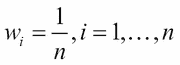
- 对于 m ，分类器 hm ，从 1 到 m 的数据遍数，执行以下任务:
- 拟合分类器 hm 对训练数据使用权重

- 计算每个分类器的误差如下:
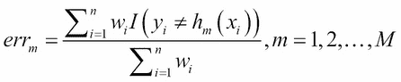
- 计算
- Output:
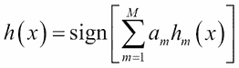
简而言之，算法展开如下:
- 最初，我们开始对所有观察值使用统一的权重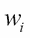。
- 在下一步中，我们计算每个考虑中的分类器的加权误差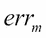。
- 需要选择一个分类器(通常是树桩，或者具有单个分裂的决策树),实践是选择具有最大准确度的分类器。
- 在改善分配和组合输出的情况下，选择任何准确度的并列分类器。
- 接下来，错误分类的观察值被赋予更多的权重，而正确分类的值被向下加权。这里需要记录重要的一点:
注意
在权重更新步骤中，被正确分类为观察值的权重之和将等于错误分类的观察值的权重之和。
从计算分类器的误差到权重更新步骤的步骤重复 M 次，并且获得每个分类器的投票能力。对于任何给定的观察值，我们随后通过使用 M 个分类器上的预测值并使用算法中指定的符号函数来进行预测，其中 M 个分类器通过它们各自的投票权进行加权。
尽管算法可能很简单，但通过一个玩具数据集进行自适应增强方法的工作是一个有用的练习。数据和计算方法取自杰西卡·诺斯的视频，可在https://www.youtube.com/watch?v=gmok1h8wG-Q获得。自适应增强算法的说明现在开始。
考虑一个有五个三连点的玩具数据集:两个解释变量和一个二进制输出值。变量和数据可以用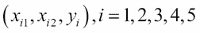来概括，这里我们有数据点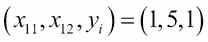、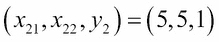、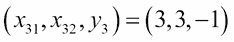、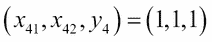、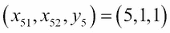。数据将首先输入到 R 中，然后作为预备步骤进行可视化:
> # ADAPTIVE BOOSTING with a Toy Dataset
> # https://www.youtube.com/watch?v=gmok1h8wG-Q
> # Jessica Noss
> # The Toy Data
> x1 <- c(1,5,3,1,5)
> x2 <- c(5,5,3,1,1)
> y <- c(1,1,-1,1,1)
> plot(x1,x2,pch=c("+","+","-","+","+"),cex=2,
+ xlim=c(0,6),ylim=c(0,6),
+ xlab=expression(x[1]),ylab=expression(x[2]),
+ main="The TOY Data Depiction")
> text(x1,x2,labels=names(y),pos=1)
树桩是讨论中提到的决策树的一个特例。在这里，我们将使用树桩作为基础学习者。简单地看一下前面的图表有助于我们轻松地找到比随机猜测更准确的树桩。
例如，我们可以在 放置一个树桩，将左侧的所有观察值标记为正，将右侧的所有观察值标记为负。在下面的程序中，绿色阴影区域中的点是树桩预测的正值，而红色阴影区域中的点是负值。同样，我们可以在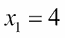和
放置一个树桩，将左侧的所有观察值标记为正，将右侧的所有观察值标记为负。在下面的程序中，绿色阴影区域中的点是树桩预测的正值，而红色阴影区域中的点是负值。同样，我们可以在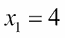和 使用额外的树桩。多亏了
使用额外的树桩。多亏了symmetry()，预测也可以换成同样的树桩。因此，之前我们将绿色阴影区域放在 的左侧，并预测值为正值，通过颠倒顺序，树桩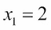右侧的区域将被标记为正值。对底片也进行类似的分类。在树桩
的左侧，并预测值为正值，通过颠倒顺序，树桩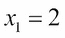右侧的区域将被标记为正值。对底片也进行类似的分类。在树桩 和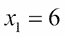处重复该任务。使用
和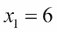处重复该任务。使用par、plot、text和rect图形功能，我们在下面呈现这些基础学习者的视觉描述:
> # Visualizing the stump models
> windows(height=200,width=300)
> par(mfrow=c(2,3))
> plot(x1,x2,pch=c("+","+","-","+","+"),cex=2,
+ xlim=c(0,6),ylim=c(0,6),
+ xlab=expression(x[1]),ylab=expression(x[2]),
+ main="Classification with Stump X1<2")
> text(x1,x2,labels=names(y),pos=1)
> plim <- par("usr")
> rect(xleft=2,ybottom = plim[3],xright = plim[2],ytop = plim[4],
+ border = "red",col="red",density=20 )
> rect(xleft=plim[1],ybottom = plim[3],xright = 2,ytop = plim[4],
+ border = "green",col="green",density=20 )
> plot(x1,x2,pch=c("+","+","-","+","+"),cex=2,
+ xlim=c(0,6),ylim=c(0,6),
+ xlab=expression(x[1]),ylab=expression(x[2]),
+ main="Classification with Stump X1<4")
> text(x1,x2,labels=names(y),pos=1)
> rect(xleft=4,ybottom = plim[3],xright = plim[2],ytop = plim[4],
+ border = "red",col="red",density=20 )
> rect(xleft=plim[1],ybottom = plim[3],xright = 4,ytop = plim[4],
+ border = "green",col="green",density=20 )
> plot(x1,x2,pch=c("+","+","-","+","+"),cex=2,
+ xlim=c(0,6),ylim=c(0,6),
+ xlab=expression(x[1]),ylab=expression(x[2]),
+ main="Classification with Stump X1<6")
> text(x1,x2,labels=names(y),pos=1)
> rect(xleft=6,ybottom = plim[3],xright = plim[2],ytop = plim[4],
+ border = "red",col="red",density=20 )
> rect(xleft=plim[1],ybottom = plim[3],xright = 6,ytop = plim[4],
+ border = "green",col="green",density=20 )
> plot(x1,x2,pch=c("+","+","-","+","+"),cex=2,
+ xlim=c(0,6),ylim=c(0,6),
+ xlab=expression(x[1]),ylab=expression(x[2]),
+ main="Classification with Stump X1>2")
> text(x1,x2,labels=names(y),pos=1)
> rect(xleft=2,ybottom = plim[3],xright = plim[2],ytop = plim[4],
+ border = "green",col="green",density=20 )
> rect(xleft=plim[1],ybottom = plim[3],xright = 2,ytop = plim[4],
+ border = "red",col="red",density=20 )
> plot(x1,x2,pch=c("+","+","-","+","+"),cex=2,
+ xlim=c(0,6),ylim=c(0,6),
+ xlab=expression(x[1]),ylab=expression(x[2]),
+ main="Classification with Stump X1>4")
> text(x1,x2,labels=names(y),pos=1)
> rect(xleft=4,ybottom = plim[3],xright = plim[2],ytop = plim[4],
+ border = "green",col="green",density=20 )
> rect(xleft=plim[1],ybottom = plim[3],xright = 4,ytop = plim[4],
+ border = "red",col="red",density=20 )
> plot(x1,x2,pch=c("+","+","-","+","+"),cex=2,
+ xlim=c(0,6),ylim=c(0,6),
+ xlab=expression(x[1]),ylab=expression(x[2]),
+ main="Classification with Stump X1>6")
> text(x1,x2,labels=names(y),pos=1)
> rect(xleft=6,ybottom = plim[3],xright = plim[2],ytop = plim[4],
+ border = "green",col="green",density=20 )
> rect(xleft=plim[1],ybottom = plim[3],xright = 6,ytop = plim[4],
+ border = "red",col="red",density=20 )前面 R 程序的结果如下图所示:
注意，在点 2、4 和 6 处，可以为变量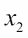获得类似的分类。尽管没有必要给出基于 的完整 R 程序，我们还是简单的输出了下图。该程序可以在代码包中获得。基于
的完整 R 程序，我们还是简单的输出了下图。该程序可以在代码包中获得。基于 的树桩将在接下来的讨论中被忽略:
的树桩将在接下来的讨论中被忽略:
基于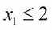的残肢选择导致一些错误分类，我们可以看到 P1、P4 和 P3 的观测值被正确分类，而 P2 和 P5 被错误分类。基于这个树桩的预测可以放在(1，-1，-1，1，-1)。基于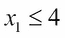的残肢对点 P1 和 P4 分类正确，而 P2、P3、P5 分类错误，这里向量形式的预测是(1，-1，1，1，-1)。这里考虑的六个模型将在 R 程序中用 M1、M2、…、M6 来表示，根据前面指定的算法，我们有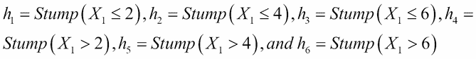。类似地，我们对其他四个树桩进行预测，并将它们输入到 R 中，如下所示:
> # The Simple Stump Models
> M1 <- c(1,-1,-1,1,-1) # M1 = X1<2 predicts 1, else -1
> M2 <- c(1,-1,1,1,-1) # M2 = X1<4 predicts 1, else -1
> M3 <- c(1,1,1,1,1) # M3 = X1<6 predicts 1, else -1
> M4 <- c(-1,1,1,-1,1) # M4 = X1>2 predicts 1, else -1;M4=-1*M1
> M5 <- c(-1,1,-1,-1,1) # M5 = X1>4 predicts 1, else -1;M5=-1*M2
> M6 <- c(-1,-1,-1,-1,-1) # M6 = X1>6 predicts 1, else -1;M6=-1*M3
利用六个模型M1-M6给出的预测，我们可以将它们与y中的真实标签进行比较，并查看这些模型中哪些观测值被错误分类:
> # Stem Model Errors
> Err_M1 <- M1!=y
> Err_M2 <- M2!=y
> Err_M3 <- M3!=y
> Err_M4 <- M4!=y
> Err_M5 <- M5!=y
> Err_M6 <- M6!=y
> # Their Misclassifications
> rbind(Err_M1,Err_M2,Err_M3,Err_M4,Err_M5,Err_M6)
P1 P2 P3 P4 P5
Err_M1 FALSE TRUE FALSE FALSE TRUE
Err_M2 FALSE TRUE TRUE FALSE TRUE
Err_M3 FALSE FALSE TRUE FALSE FALSE
Err_M4 TRUE FALSE TRUE TRUE FALSE
Err_M5 TRUE FALSE FALSE TRUE FALSE
Err_M6 TRUE TRUE FALSE TRUE TRUE因此，TRUE的值意味着名为 points 的列在名为 model 的行中被错误分类。权重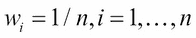被初始化，并且加权误差 被计算用于以下 R 块中的每个模型:
被计算用于以下 R 块中的每个模型:
> # ROUND 1
> # Weighted Error Computation
> weights_R1 <- rep(1/length(y),length(y)) #Initializaing the weights
> Err_R1 <- rbind(Err_M1,Err_M2,Err_M3,Err_M4,Err_M5,Err_M6)%*%
+ weights_R1
> Err_R1 # Error rate
[,1]
Err_M1 0.4
Err_M2 0.6
Err_M3 0.2/
Err_M4 0.6
Err_M5 0.4
Err_M6 0.8由于对应于模型 3 或的误差最小，我们首先选择它，并计算可分配给它的投票权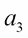如下:
> # The best classifier error rate
> err_rate_r1 <- min(Err_R1)
> alpha_3 <- 0.5*log((1-err_rate_r1)/err_rate_r1)
> alpha_3
[1] 0.6931472
因此，升压算法步骤表明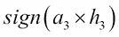给我们所需的预测:
> alpha_3*M3
[1] 0.6931472 0.6931472 0.6931472 0.6931472 0.6931472
> sign(alpha_3*M3)
[1] 1 1 1 1 1
中央的观察值P3仍然分类错误，因此我们继续下一步。
现在我们需要更新权重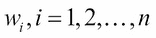，对于分类问题，使用以下公式给出简化形式的规则:
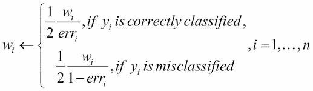
因此，我们需要一个函数，它将以前运行的权重、错误率和模型的错误分类作为输入，然后将它们作为合并了前面公式的更新权重返回。我们将这样的函数定义如下:
> # Weights Update Formula and Function
> Weights_update <- function(weights,error,error_rate){
+ weights_new <- NULL
+ for(i in 1:length(weights)){
+ if(error[i]==FALSE) weights_new[i] <- 0.5*weights[i]/(1-error_rate)
+ if(error[i]==TRUE) weights_new[i] <- 0.5*weights[i]/error_rate
+ }
+ return(weights_new)
+ }现在，我们将更新权重并计算六个模型的误差:
> # ROUND 2
> # Update the weights and redo the analyses
> weights_R2 <- Weights_update(weights=weights_R1,error=Err_M3,
+ error_rate=err_rate_r1)
> Err_R2 <- rbind(Err_M1,Err_M2,Err_M3,Err_M4,Err_M5,Err_M6)%*%
+ weights_R2
> Err_R2 # Error rates
[,1]
Err_M1 0.25
Err_M2 0.75
Err_M3 0.50
Err_M4 0.75
Err_M5 0.25
Err_M6 0.50这里，模型M1和M5在新的权重下具有相等的错误率，我们简单地选择模型 1，计算其投票能力，并基于更新后的模型进行预测:
> err_rate_r2 <- min(Err_R2)
> alpha_1 <- 0.5*log((1-err_rate_r2)/err_rate_r2)
> alpha_1
[1] 0.5493061
> alpha_3*M3+alpha_1*M1
[1] 1.242453 0.143841 0.143841 1.242453 0.143841
> sign(alpha_3*M3+alpha_1*M1)
[1] 1 1 1 1 1
由于点P3仍被错误分类，我们继续迭代并再次应用循环:
> # ROUND 3
> # Update the weights and redo the analyses
> weights_R3 <- Weights_update(weights=weights_R2,error=Err_M1,
+ error_rate=err_rate_r2)
> Err_R3 <- rbind(Err_M1,Err_M2,Err_M3,Err_M4,Err_M5,Err_M6)%*%
+ weights_R3
> Err_R3 # Error rates
[,1]
Err_M1 0.5000000
Err_M2 0.8333333
Err_M3 0.3333333
Err_M4 0.5000000
Err_M5 0.1666667
Err_M6 0.6666667
> err_rate_r3 <- min(Err_R3)
> alpha_5 <- 0.5*log((1-err_rate_r3)/err_rate_r3)
> alpha_5
[1] 0.804719
> alpha_3*M3+alpha_1*M1+alpha_5*M5
[1] 0.4377344 0.9485600 -0.6608779 0.4377344 0.9485600
> sign(alpha_3*M3+alpha_1*M1+alpha_5*M5)
[1] 1 1 -1 1 1现在分类是完美的，经过三次迭代，我们没有任何误分类或错误。本节编程的目的是以一种基本的方式演示自适应升压算法中的步骤。在下一部分，我们将看看梯度推进技术。


 由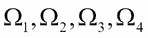中的四个部分组成，四个分类器的性能如前表所示。增强方法开发背后的思想是以连续的方式临时制作分类器。也就是说，组合分类器是一个接一个地进行的，而不是同时进行的。现在，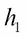的误差将被校正为新的分布 D ’,对于区域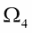，分类器的误差被赋予更大的权重。分类器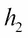将使用分布 D’并且其在区域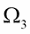中的误差区域实例将被赋予更大的权重，导致分布 D”。提升方法将继续剩余分类器的过程，并给出总体组合器/集成。一个伪 boosting 算法(见周(2012)的第二章)总结如下:
由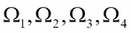中的四个部分组成，四个分类器的性能如前表所示。增强方法开发背后的思想是以连续的方式临时制作分类器。也就是说，组合分类器是一个接一个地进行的，而不是同时进行的。现在，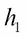的误差将被校正为新的分布 D ’,对于区域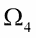，分类器的误差被赋予更大的权重。分类器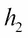将使用分布 D’并且其在区域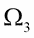中的误差区域实例将被赋予更大的权重，导致分布 D”。提升方法将继续剩余分类器的过程，并给出总体组合器/集成。一个伪 boosting 算法(见周(2012)的第二章)总结如下:
 和树
和树